129015 mtanh and apply_omX review1. 129015 mtanh NCSCAL = 1*, warmup = 2 / transformations and errors
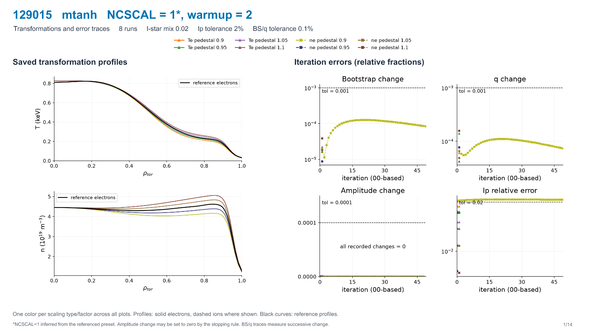
2. 129015 mtanh NCSCAL = 1*, warmup = 2 / iterations and pressure
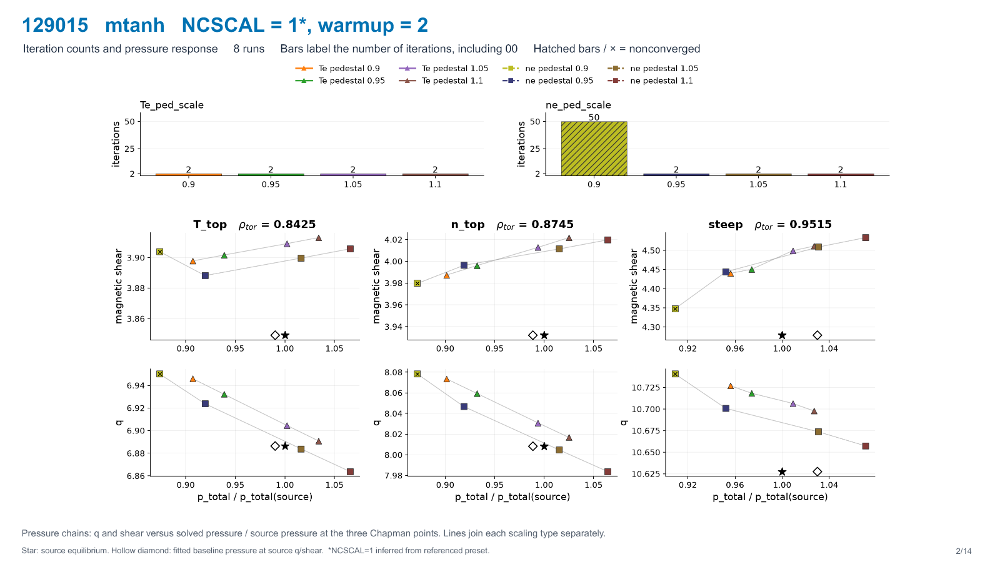
3. 129015 mtanh NCSCAL = 1*, warmup = 0 / transformations and errors
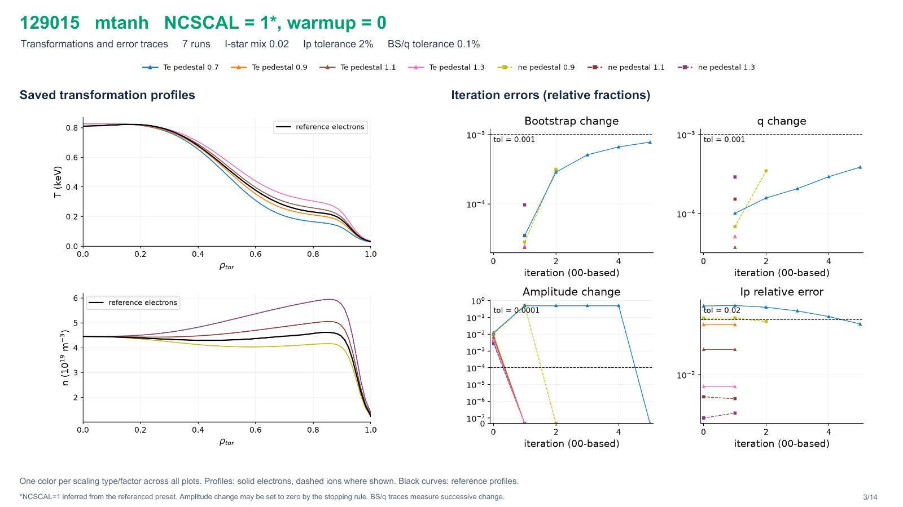
4. 129015 mtanh NCSCAL = 1*, warmup = 0 / iterations and pressure
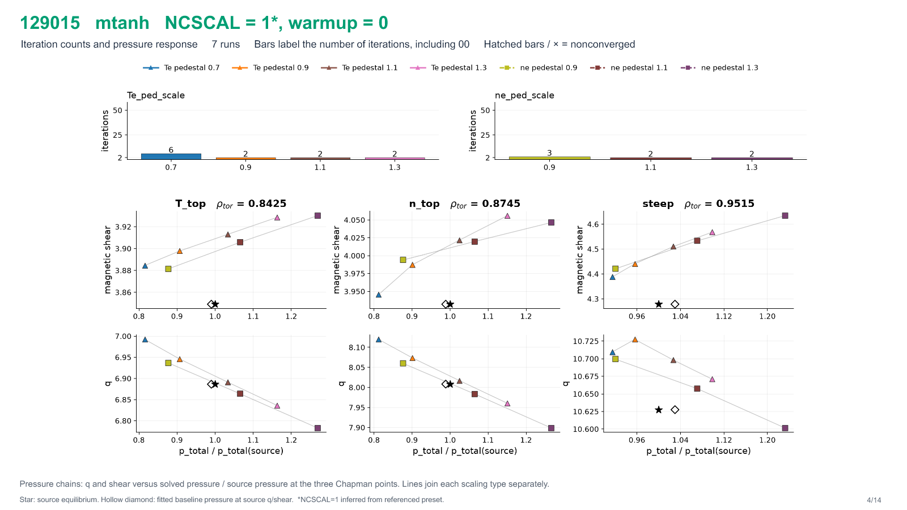
5. 129015 mtanh NCSCAL = 4, warmup = 2 / transformations and errors
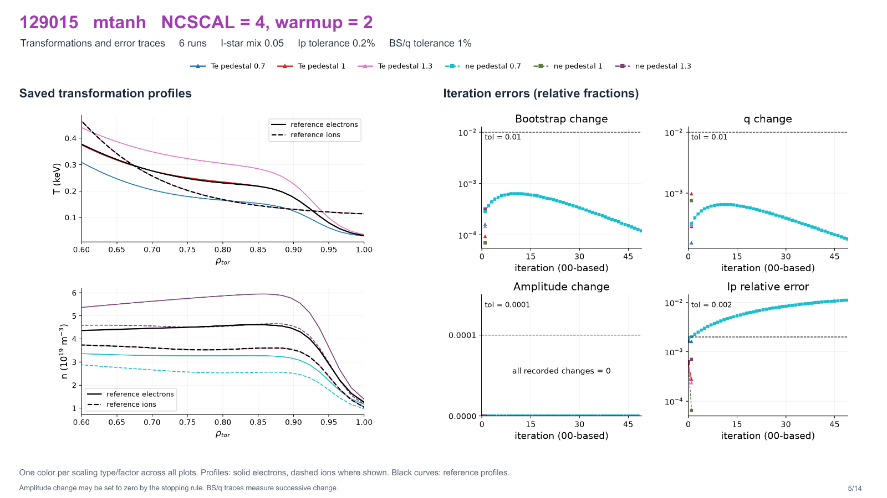
6. 129015 mtanh NCSCAL = 4, warmup = 2 / iterations and pressure
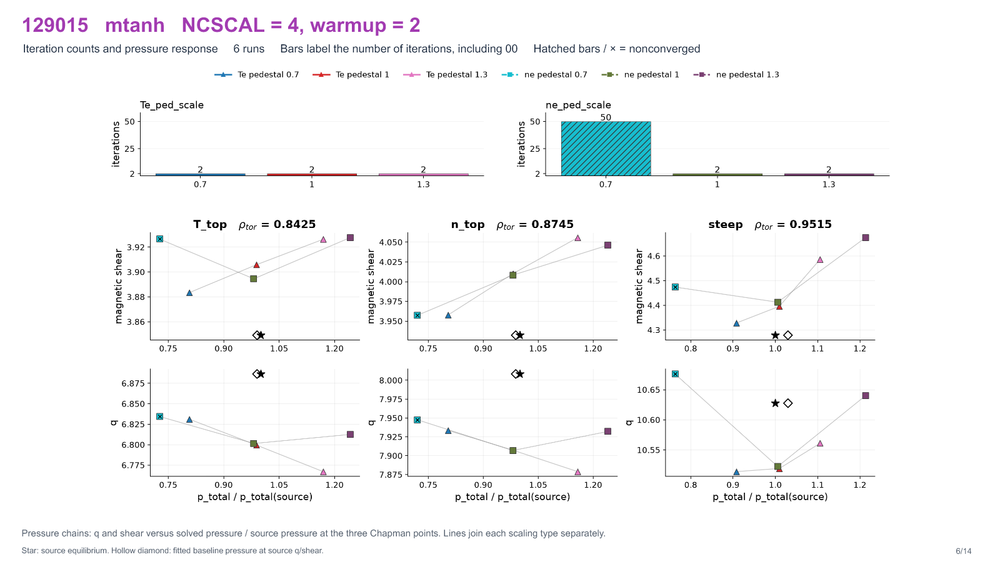
7. 129015 mtanh NCSCAL = 4, warmup = 0 / transformations and errors
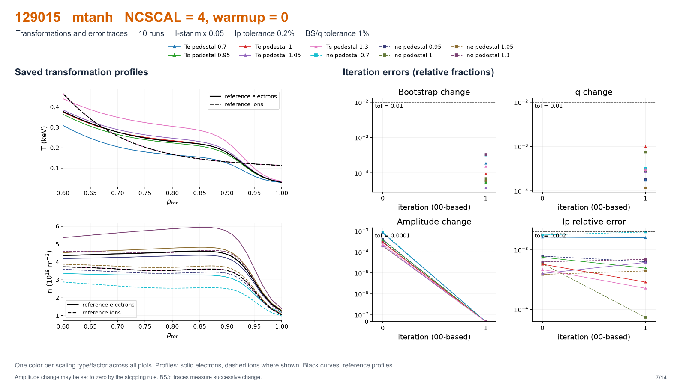
8. 129015 mtanh NCSCAL = 4, warmup = 0 / iterations and pressure
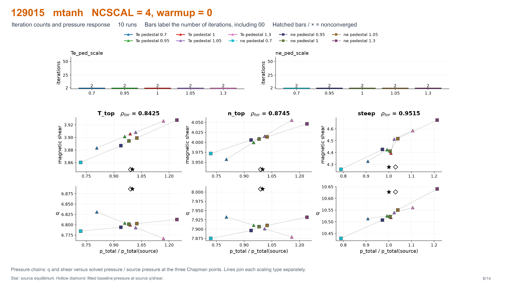
10. 129015 apply_omX NCSCAL = 4, warmup = 2 / transformations and errors
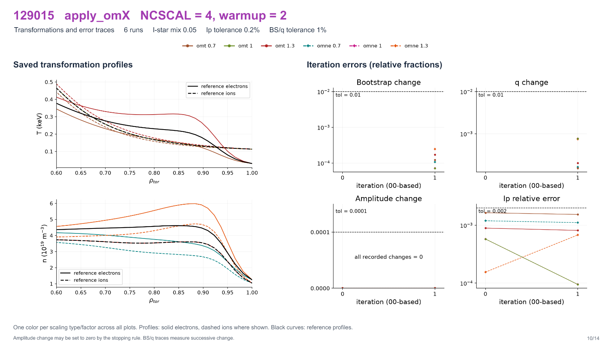
11. 129015 apply_omX NCSCAL = 4, warmup = 2 / iterations and pressure
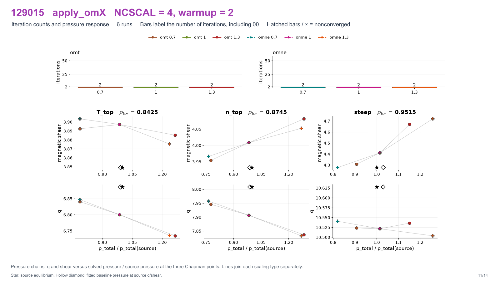
12. 129015 apply_omX NCSCAL = 4, warmup = 0 / transformations and errors
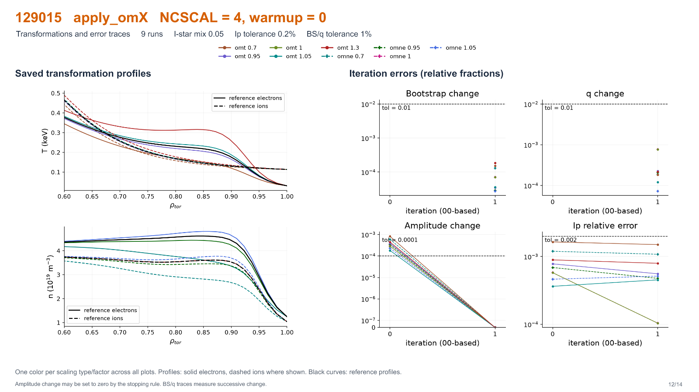
13. 129015 apply_omX NCSCAL = 4, warmup = 0 / iterations and pressure
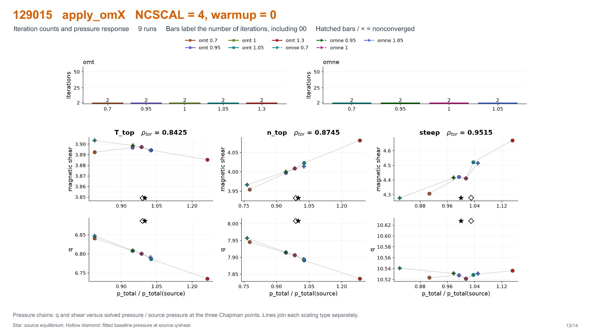